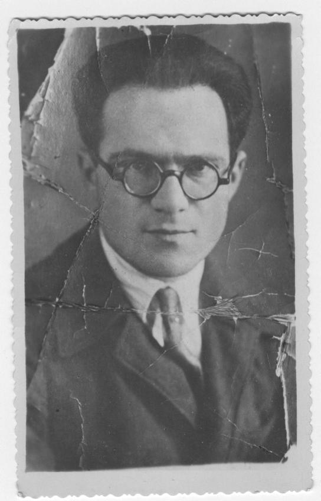

По приглашению Ландау приехал в Харьков. 31 декабря Ландау написал Балицкому, что Корец был его «ближайшим сотрудником»1).
Севастополь · Москва · 1908–1984
Моисей
Абрамович
Корец
Физик из круга Льва Ландау. Четырнадцать лет лагерей, ссылка в Инте, стихи, написанные на нарах, потом журнал «Природа».

Яркие моменты
Из бумаг, стихов и книг.
Великое дело Октябрьской революции подло предано. Страна затоплена потоками крови и грязи.

Среди ужасов войны, опустошавшей неоднократно его маленькую, но горячо любимую родину, в огне пожарищ, уничтоживших его последнее имущество, среди смертей близких и дорогих людей, обремененный многочисленной семьей, удрученный тяжелой болезнью своей любимой подруги, сгибаясь под ударами нужды и голода, забытый органист провинциального костела, великий Иоганн Себастьян Бах, творил свои могучие, полные радости и прославления жизни, бессмертные произведения, которые сотни лет будят в душах людей бодрость, стремление к великому и безграничную любовь ко всепобеждающей жизни.
Я исполнил долг еврея,
Рассказавши вам, читатель,
Эту древнюю Хагоду.
Потому, что в наше время
Негр, француз, китаец, немец,
Эфиоп, индус, датчанин —
Все немножечко евреи.
Так лучше на воле волком выть,
Лучше на поле камнем быть,
Чем видеть такие сны.
27 апреля арест вместе с Ландау и Юрием Румером. Военный трибунал дал десять лет2). В лагере прошли четырнадцать лет. 18 марта 1952 года — амнистия, до 1958-го ссылка в Инте3).


Да, знаком. Это почерк физика М.А. Корец, которого я хорошо знаю.

Предъявленная мне антисоветская листовка действительно была составлена мною и Корец М.А.

Старшая дочь — Ирина, родилась в 1929 году. В паспорте записала себя Есфир. Ей он писал из лагеря: четыре года не видел.
Средняя — Галочка. 26 апреля 1945 года из Межога: не знает, жива ли она и где4).
Третья, Наташа, родилась в лагере в начале 1946 года. Её мать — Серафима Иосифовна Рудова*. Муж Наташи — физик Юрий Абрамович Гольфанд.
Ландау написал в военную прокуратуру: Корец «успел проявить себя как способный молодой физик-теоретик»5). По делу 1938 года в реабилитации отказали. Её дали после смерти6).

Москва, журнал «Природа». В «Кванте» — «Почему Луна не из чугуна?»7). Книги подписывал Карев.
Умер 19 февраля в Москве. Йорцайт — 16 адара I 5744 года. Семья уехала в 1990-м. Он до этого дня не дожил.
Дело и письма
Описи разделов лежат внутри каждого дела.
Фотографии
Источники
Знак в тексте ведёт сюда. Такой же знак возвращает к фразе. Название ведёт к бумаге или к публикации.
- 1) Письмо Ландау Балицкому, 31 декабря 1935. «Ближайший сотрудник».
- 2) Обвинительное заключение и суд. Десять лет по статье 58, пункты 10 и 11.
- 3)* Воспоминания Наташи. Ссылка в Инте, старший инженер электросети «Интауголь». Серафима Иосифовна Рудова, Наташа родилась в лагере.
- 4) Письмо Шуре, 26 апреля 1945, из Межога. О Галочке он пишет, что не знает, жива ли она и где.
- 5) Письмо Ландау в военную прокуратуру, 1956. «Успел проявить себя как способный молодой физик-теоретик».
- 6) Реабилитация. Указ от 13 августа 1990 года.
- 7) М. Корец, З. Понизовский. «Почему Луна не из чугуна?», «Квант», 1972, № 4.